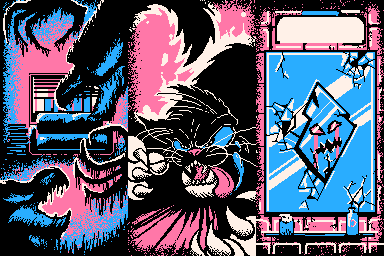
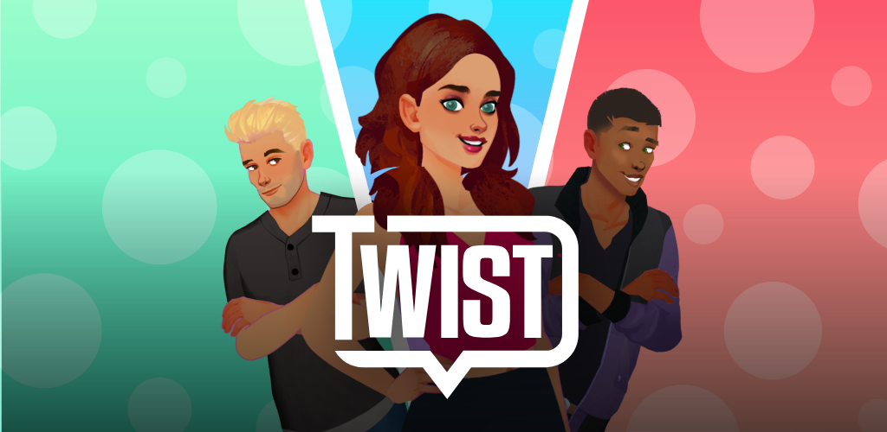
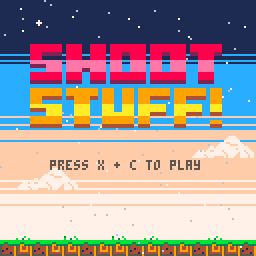

Hey! Welcome to my small corner of the web. I'm Gabriel Cornish and I make games. Below you'll find features and games I've created or worked on over the years. Why not give them a play?
A game about making friends, going on adventures and experiencing Hogwarts! I was the Senior Designer for this project.

A Ludum Dare Jam Game I made with some friends. It's about getting to your first date on time while Demons try to keep you trapped in your apartment.
Cancelled. An interactive fiction game with an assortment of stories where your choices determine the outcomes. I did narrative and gameplay design for this project.
A small game (under 32kb) about...well, shooting stuff.
An adorable but hardcore bubble shooter. You play as Mama Panda trying to recue her babies from the evil Badboon. I was a level designer for this project.